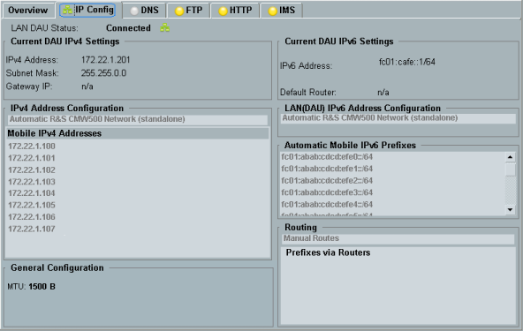

The "IP Config" tab displays the current IP configuration of the DAU.

The parameter "LAN DAU Status" at the top of the tab indicates whether an active external network is connected to the LAN DAU connector or not. Note that an external network connected to the LAN DAU connector is ignored by the DAU if a standalone setup is selected in the settings, see "IPv4 Address Configuration" and "LAN IPv6 Address Configuration".
The current IPv4 configuration and the general IP settings are displayed in the left half of the tab, the IPv6 configuration in the right half. The values result either directly from DAU settings described in the following sections or have been assigned dynamically by a connected external network.
The current DAU IP addresses displayed at the top can be used to address the DAU, e.g. to access the internal web server or other DAU services.
If the dynamic host configuration protocol (DHCP) is selected as configuration method, an additional parameter "DHCPv4 Status" or "DHCPv6 Status" is shown. This parameter indicates via a colored icon whether the dynamic configuration via DHCP was successful and the network connection works properly (green icon) or not (yellow icon).
The following commands allow you to query the displayed information.
For the DUT address/prefix pools, there is a separate command for each configuration method. So all pools can be queried, the displayed currently used pools and the currently inactive pools.
Remote command: